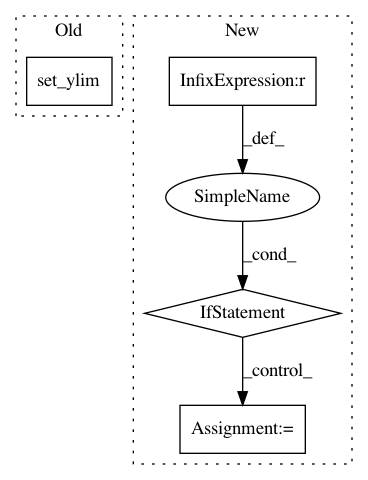

0ac7cecce4f147011037fcb79dfd57867b8329a8,nilmtk/metergroup.py,MeterGroup,plot_good_sections,#MeterGroup#Any#Any#Any#,1393
Before Change
label = ""
return label
ax.yaxis.set_major_formatter(FuncFormatter(y_formatter))
ax.set_ylim([0, n])
return ax
def sort_meters(self):
Sorts meters by instance.
After Change
// Load each appliance
for appliance_md in appliances:
appliance_md["dataset"] = building_id.dataset
appliance_md["building"] = building_id.instance
appliance = Appliance(appliance_md)
meter_ids = [ElecMeterID(instance=meter_instance,
building=building_id.instance,
dataset=building_id.dataset)
for meter_instance in appliance.metadata["meters"]]
if appliance.n_meters == 1:
In pattern: SUPERPATTERN
Frequency: 3
Non-data size: 4
Instances
Project Name: nilmtk/nilmtk
Commit Name: 0ac7cecce4f147011037fcb79dfd57867b8329a8
Time: 2014-12-19
Author: jack-list@xlk.org.uk
File Name: nilmtk/metergroup.py
Class Name: MeterGroup
Method Name: plot_good_sections
Project Name: kundajelab/dragonn
Commit Name: 38512d92a8682a62e73c5b9e86366888be374532
Time: 2019-05-29
Author: annashcherbina@gmail.com
File Name: dragonn/vis/__init__.py
Class Name:
Method Name: plot_ism
Project Name: arviz-devs/arviz
Commit Name: aee37a2471694eba60816541671c1f892ce2feeb
Time: 2020-08-27
Author: agustinaarroyuelo@gmail.com
File Name: arviz/plots/backends/matplotlib/traceplot.py
Class Name:
Method Name: plot_trace